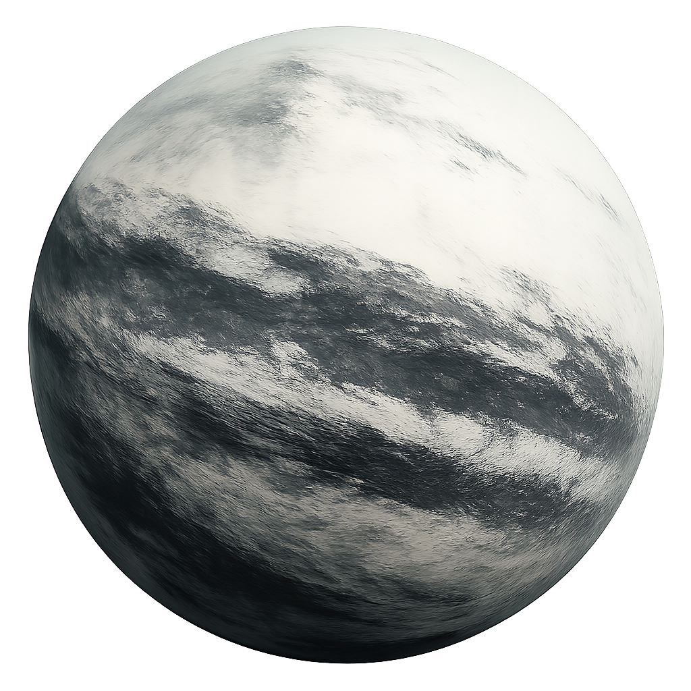

El Mundo Helado de Mann
Un planeta de desolación, amoníaco y promesas rotas.
Un Paisaje de Hielo Eterno
Atmósfera Hostil
La atmósfera del planeta es delgada y tóxica, compuesta principalmente de nitrógeno y metano, con una alta concentración de amoníaco. Es completamente irrespirable para los humanos y las temperaturas diurnas rondan los -80°C.
Superficie Engañosa
Lo que a primera vista parecen montañas y tierra firme son en realidad gigantescos glaciares de hielo y amoníaco congelado. No existe agua líquida en la superficie, solo un desierto helado bajo un cielo perpetuamente nublado.
Gravedad y Tiempo
La gravedad es del 80% de la de la Tierra, lo que la hace manejable. A diferencia del planeta de Miller, no sufre una dilatación temporal extrema, permitiendo una estancia prolongada sin perder décadas en la Tierra. Un día en este planeta dura aproximadamente 67 horas.
La Promesa Rota
El Dr. Mann, el líder de las misiones Lázaro, transmitió datos que indicaban un mundo habitable, con una superficie orgánica y condiciones favorables. Esta fue la señal que atrajo a la tripulación del Endurance, desesperada por encontrar un nuevo hogar para la humanidad.
Sin embargo, todo era una mentira. Atrapado por la soledad y el pánico al descubrir que su planeta era un fracaso, Mann falsificó los datos y activó la baliza con la única esperanza de ser rescatado. Su "superficie habitable" no era más que una nube de amoníaco congelado. Su egoísmo lo llevó a sacrificar la misión y a poner en peligro a toda la humanidad.
El Encuentro en el Hielo
Al llegar, la tripulación del Endurance encuentra a Mann en crio-sueño. Tras despertarlo, este los guía a través del desolado paisaje, manteniendo su engaño. La confrontación ocurre cuando Cooper descubre la verdad en los datos del robot KIPP. Mann, acorralado, intenta asesinar a Cooper y escapar con la nave Ranger, desencadenando una de las secuencias más tensas y destructivas de la misión.